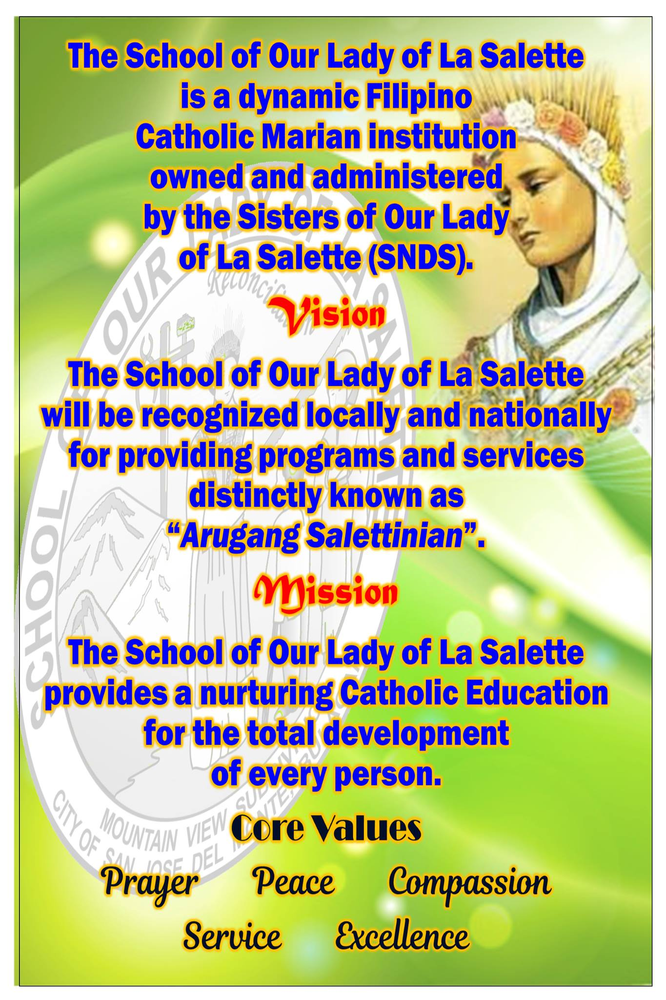

About Me
Olabels everyone! I'm Ian, a passionate blogger who loves to share my experiences and thoughts on various topics. I enjoy exploring new places, trying out different cuisines, and connecting with people. Join me on my journey as I share my adventures, insights, and a bit of fun along the way!
Academics
Mariano Ponce Elementary School
Espiritu Santo Parochial School

School of Our Lady of La Salette Inc.

Technological University of the Philippines
Skills in Various Programming Languages and Technologies
| Language/Technology | Level |
|---|---|
| C | Beginner |
| C++ | Beginner |
| Java | Beginner |
| HTML | Beginner |